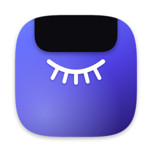
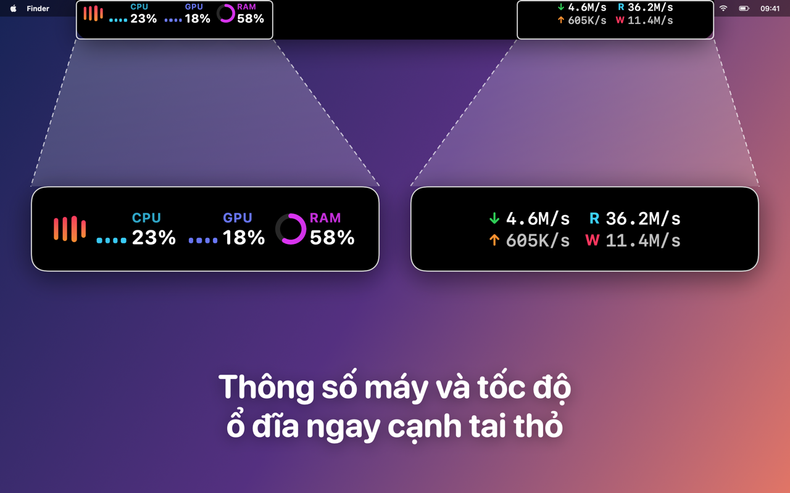
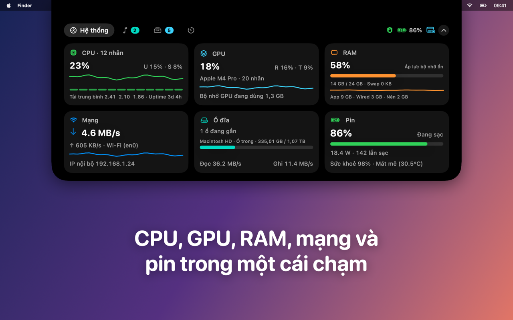
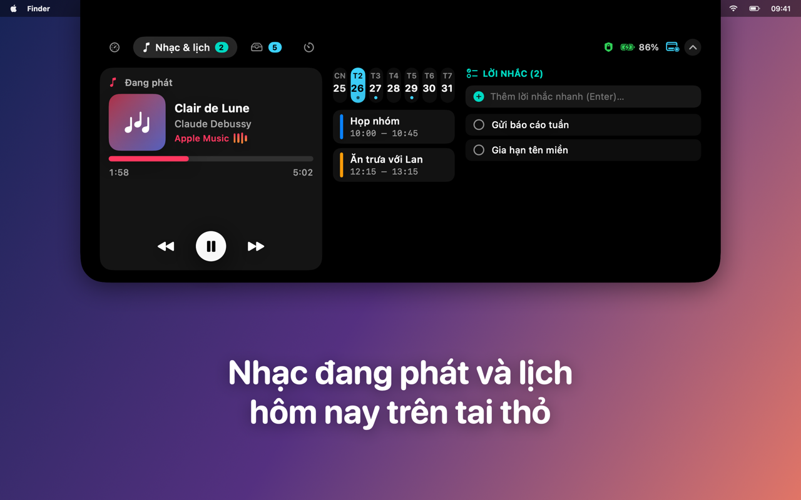
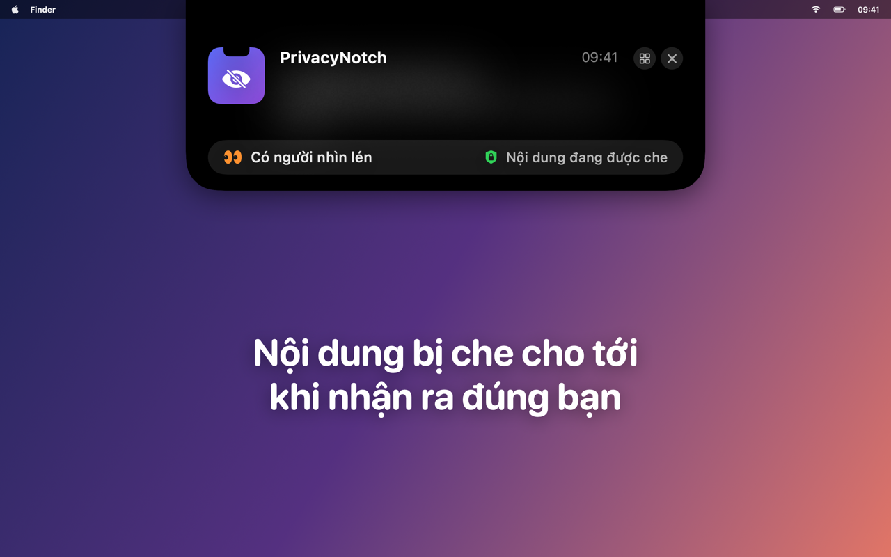
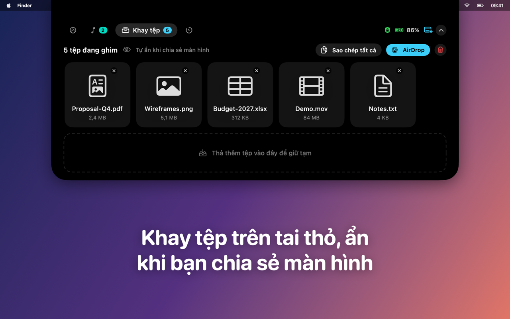

PrivacyNotch
Tai thỏ thông minh, riêng tư
Biến tai thỏ MacBook thành trung tâm nhỏ: thông số máy, nhạc, lịch, lời nhắc, kệ tệp và hẹn giờ tập trung. Tự che khi bạn chia sẻ màn hình.
Sắp có trên App Store




PrivacyNotch biến tai thỏ của MacBook thành một "Dynamic Island" hữu ích và kín đáo. Mọi thứ bạn cần liếc nhanh nằm ngay cạnh camera, còn nội dung riêng tư chỉ hiện khi đúng bạn đang nhìn.
Tai thỏ và hub
- Thanh cánh hai bên tai thỏ: CPU, GPU, RAM, tốc độ mạng, tốc độ đọc/ghi ổ cứng, bài đang phát, hẹn giờ tập trung và sự kiện sắp tới.
- Rê chuột hay bấm vào tai thỏ để mở Hub: thông số chi tiết, điều khiển Nhạc và Spotify, lịch hôm nay, lời nhắc, kệ tệp kéo thả và hẹn giờ tập trung.
- Bật hay tắt từng thành phần trong Cài đặt.
- Máy không có tai thỏ: đảo nổi giữa cạnh trên màn hình.
Riêng tư là mặc định
- Nhắc việc, lịch và hẹn giờ mà PrivacyNotch hiện trên tai thỏ được che cho tới khi xác minh đúng chủ máy đang nhìn.
- Kệ tệp riêng tư chỉ mở khi đúng bạn đang nhìn.
- Hai khuôn mặt cùng nhìn vào màn hình: nội dung được che ngay.
- Đang chia sẻ hay phản chiếu màn hình: tai thỏ tự ẩn, người xem không thấy gì.
- Máy không có camera hoặc camera đang bận: mở bằng Touch ID hay mật khẩu máy.
Khuôn mặt của bạn ở lại trên máy
- Camera chỉ bật dưới 0,3 giây khi cần xác minh, đèn xanh của máy vẫn sáng.
- Không lưu ảnh. Chỉ lưu một vector đặc trưng khuôn mặt trong Keychain của máy này, không đồng bộ iCloud, không gửi đi đâu. Xoá được bất cứ lúc nào.
- Không quảng cáo, không phân tích hành vi, không tài khoản.
Tiện lợi
- Mở cùng máy, chạy gọn trên thanh menu.
- Tạm dừng che 1 giờ chỉ với một lần bấm.
- Tiếng Việt và tiếng Anh.
- Yêu cầu macOS 14 trở lên.